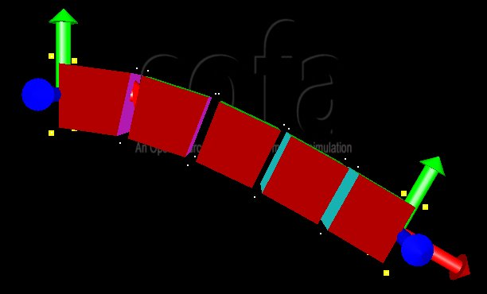
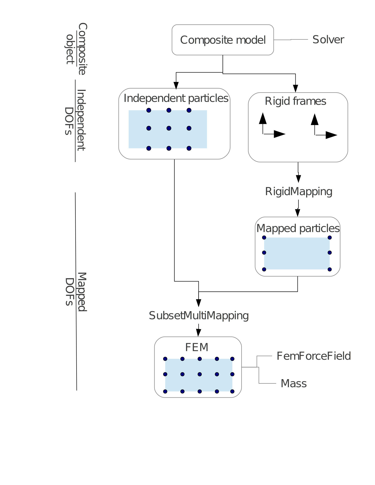

|  |
| An FE model connected to two
rigid objects. The yellow squares highlight FE nodes embedded in the
rigid objects using a mapping. The white points are independent FE
nodes. |
|  |
| The kinematic hierarchy used to
create the composite object. |
DEFINES += SOFA_HAVE_DAG DEFINES += SOFA_HAVE_TUTORIALS